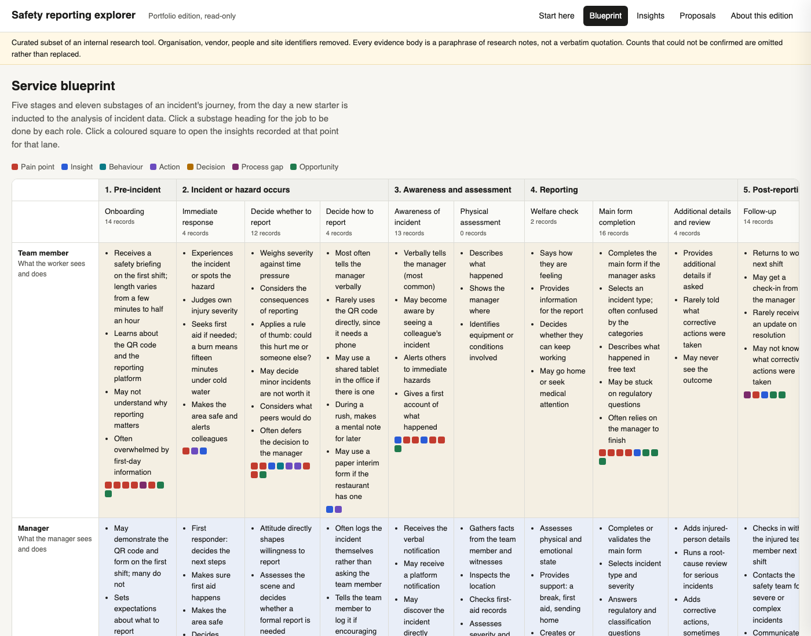
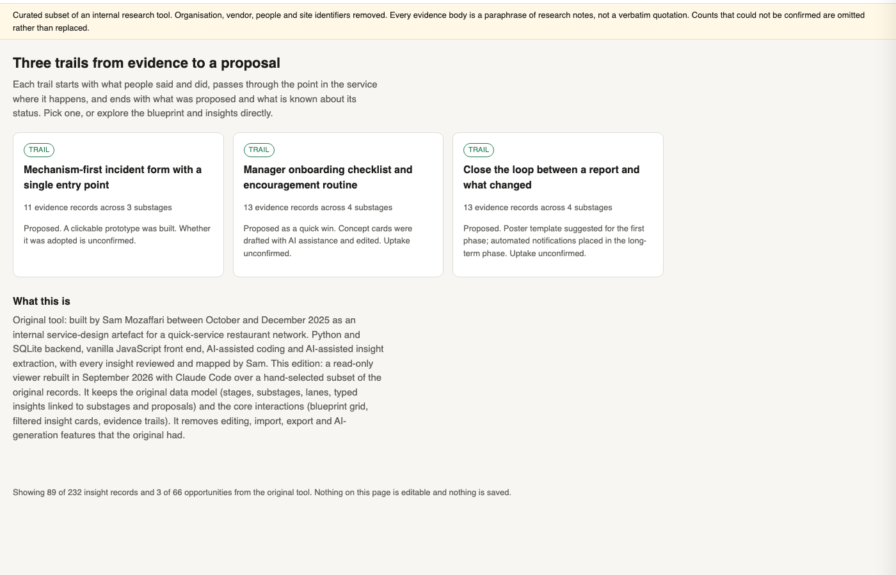

A safety incident and hazard reporting platform used across several hundred restaurants. Reporting consistency varied widely between sites and nobody could say why.
My roleExperience Designer. Led the research and design work; built the tool that holds the evidence.
CollaboratorsCentral safety team, training team, area safety leads, restaurant managers and team members as participants.
ConstraintsThe platform was a configured vendor product, not something we could rebuild. Phone policies differed by restaurant. Research had to fit around peak trade.
Key decisionRecommend changes to what the form asks and to manager routines, rather than a new system. The evidence pointed at the workflow and the culture around it, not at the software.
StatusDelivered December 2025: findings report, service blueprint, prioritised three-phase roadmap and form prototypes, refined through a stakeholder validation session. Implementation sits with the platform, safety and training teams.
AnonymisationOrganisation, vendor, sites and people removed. Research counts are as the December 2025 findings report records them.
The problem
The platform was configured for one workflow: a team member notices a hazard or has an incident, scans a QR code on the safety poster, fills in the form. The research found a different one in almost every restaurant. The team member tells the manager. The manager decides whether it is worth logging, logs it if so, and sometimes closes it without telling anyone. In restaurants that ban phones on shift, the QR code was not even an option, so the manager became the reporter by default without anyone deciding that.
Reporting volume varied a lot between restaurants. Low volume could mean a safe restaurant or a silent one, and the platform's data could not tell the difference. The safety team wanted to know what was getting in the way.
What I did
I designed the research to test an explanation rather than to collect complaints. The working assumption in the business was that location explained reporting differences: rougher suburbs, rougher safety culture. So the restaurant sample was deliberately mixed: eight restaurants across high- and low-reporting sites, higher- and lower-crime suburbs, metropolitan and regional.
- Thirteen in-depth interviews with team members, restaurant managers, area safety leads, a franchisee and the central safety team, mostly in the restaurants, some by phone.
- A team survey with 55 responses on awareness, training, ease of reporting and what happens after a report.
- Restaurant visits, watching how a report actually gets made during a shift and looking at the posters, the first-aid cabinet and the office setup.
- Two walkthroughs of the platform's forms with the safety team, field by field.
Every observation became a typed record: a pain point, an action people already take, a decision point, a behaviour, a process gap or an opportunity. Each record was tied to a stage and substage of the incident journey and to the role it concerned. That structure is what let the findings report point at exact places in the service rather than at themes.

What the research found
Location did not predict safety culture. The manager did. Across the mixed sample there was no difference that tracked the suburb. Where a manager talked about safety, thanked people for reports and showed the system on the first shift, reporting was strong regardless of where the restaurant was. This was the finding that reorganised the recommendations.
People reported to a person, not a platform. Team members described telling the manager first, almost without exception. They trusted their managers; nobody described feeling embarrassed or afraid to report, even when they had been doing the wrong thing. The barrier was not fear. It was the form, the phone and the threshold.
The form asked questions the reporter could not answer. Incident type came first, with options like first aid or lost time that nobody can predict while their hand is under the cold tap. The notifiable-to-the-regulator question sent people to a compliance matrix. Even area safety leads admitted asking the restaurant's safety champion which option to choose. Misclassified reports got sent back from above, and everyone learned that reporting was a way to get something wrong.
Reporters rarely heard what happened next. Minor reports were closed without a word. Over time that built the belief that reporting helps you with a claim but does nothing for anyone else. The exceptions proved the point: the restaurant where a faulty piece of equipment was fixed the same day had a story people kept telling.
Time pressure was real but smaller than it felt. Managers said a report takes one to three minutes. The cost people felt was stepping off the floor during a rush, and needing the manager's permission to do it.
Three decisions
The findings report carried a prioritised roadmap. These are the three proposals I would defend in an interview, with the alternative each one rejected.
Ask what happened first; let the manager classify the outcome later
Evidence. Dropdown options that do not describe kitchen incidents; a regulator question no team member can answer; classification errors flagged from above; hazard categories that contain events rather than conditions.
Alternative considered. Add help text and examples to each field. Rejected because the categories themselves were the problem: an industrial taxonomy applied to a kitchen, in an order that asks for the outcome before the event.
Proposal. One entry point ("something happened" or "I spotted a hazard"), then the mechanism (burn, cut, slip) in the reporter's own words, then the manager sets severity after the welfare check. Regulatory questions move to the manager's review. The safety team supported mechanism-first because it also gives them cleaner data. A clickable form prototype was built to make the argument concrete; the working version below was rebuilt in September 2026 from the same research, with its states.
Standardise what the manager does on the first shift and every day after
Evidence. The manager finding above; induction that varied from a full demonstration to nothing; no check that a new starter understood; survey respondents who had never been trained on the platform; team members who found the form easy once someone had encouraged them.
Alternative considered. A platform fix, such as simpler login or a guest mode. Kept on the roadmap, but pushed to a later phase, because the cheapest lever was the manager's routine and the research said it was also the strongest one.
Proposal. An onboarding checklist with a mandatory QR demonstration, a short template for the manager's own explanation of why reporting matters, a daily check-in card (ask about hazards, thank people, explain patterns), and a plain-language guide to what counts. Concept cards were drafted with AI assistance and edited. Placed in the quick-wins phase.
Close the loop between a report and what changed
Evidence. Survey and interview accounts of never hearing back; minor reports closed silently; the same-day equipment fix that everybody remembered; managers who already share fixes in shift briefings.
Alternative considered. Recognition programmes that reward report counts, which some restaurant groups already ran. The safety team's view was blunt: put an incentive on hazard reports and you get reports, not hazards. The field evidence agreed.
Proposal. Recognise outcomes rather than volume. A monthly "fixes from your reports" notice, a template message to the reporter when a report is resolved, and, later, automatic outcome notifications from the platform.
What was delivered and what happened next
- A findings report with the four themes, the evidence behind each, proposals by theme, form-redesign prototypes and a three-phase roadmap (quick wins, process and culture, system evolution).
- A five-stage, eleven-substage service blueprint with lanes for the team member, the manager, backstage roles and the platform.
- The insight tool: typed records linked to substages, filterable by stakeholder, type, theme and source, with the report generated from the same data.
- Concept mockups for the incident form, the onboarding checklist, the daily check-in card and a reporting-threshold reference.
The report records that the recommendations were refined through a stakeholder discussion and that the roadmap was updated afterwards. Implementation of the form change sat with the platform owner; the manager routines sat with the safety and training teams.
The tool, and how AI was used
I built the tool because the research kept outgrowing the documents. It is a small web application: a Python and SQLite backend, a JavaScript front end, and a static export for sharing. I wrote it with AI coding assistance over about three months alongside the research.
AI did three jobs inside it. It transcribed interviews. It extracted candidate insights from transcripts and classified them by type, stakeholder and theme. And it drafted the first versions of the concept mockups from an opportunity record. None of that counted until I had reviewed it. Every one of the 232 records was read, corrected where the extraction had flattened what someone meant, and placed on the blueprint by hand. The mockups were edited before they went into the report.

What this shows
It shows research designed to test an explanation, and a finding that overturned it. It shows a service blueprint used to locate problems rather than decorate a report. It shows three design decisions with the alternatives they rejected, and an internal tool built to keep evidence usable. It shows AI used inside a research workflow with a human review step that I can describe field by field.